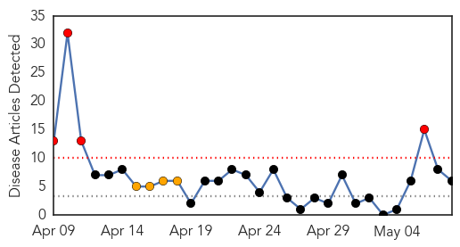
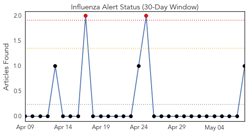
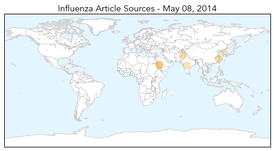
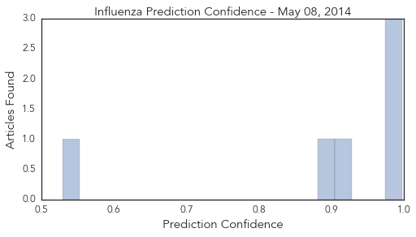

Influenza
30-Day Web Trend
4 alerts, 4 warnings

30-Day Twitter Trend
2 alerts, 0 warnings

Article Locations
Article Confidences
Top Articles:
- 0.998
- Egypt may ban Hajj pilgrims to Saudi due to MERS outbreak
- 0.998
- Egypt may ban Hajj pilgrimage as MERS virus spreads: Official
- 0.989
- Flu Scan for May 08, 2014
- 0.919
- What’s behind the WHO’s emergency declaration on the spread of wild polio
- 0.900
- Polio's return after near eradication
- 0.529
- Bird flu virus case in Kumamoto declared contained
Top Tweets:
- 0.515
- RT: A reminder from : Don't take influenza B lightly http://t.co/94TpheR0ze via flu
Measles
30-Day Web Trend
2 alerts, 0 warnings

30-Day Twitter Trend
0 alerts, 0 warnings

Article Locations

Article Confidences

Top Articles:
- 0.981
- Hanoi, HCM City face epidemic threats
- 0.975
- Measles, once-banished, making a comeback
- 0.913
- Allegheny County Health Dept. Investigating Measles Case « CBS Pittsburgh
- 0.906
- Officials encourage vaccinations
- 0.882
- Count of U.S. measles cases closing on modern record
- 0.800
- Over 40 children die of measles in Sujawal: PRF
- 0.684
- Measles case confirmed in Allegheny County
- 0.599
- Deadly diseases making comeback
- 0.546
- Parma City Schools inform parents, staff, students of possible measles exposure
Top Tweets:
-
No tweets found for May 08, 2014